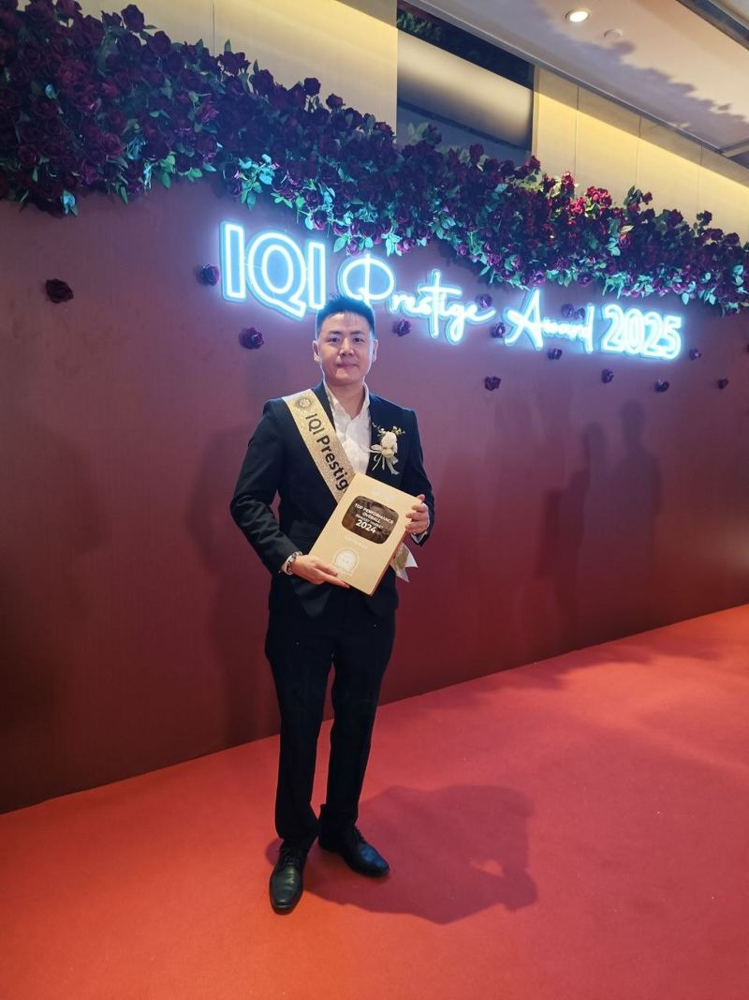
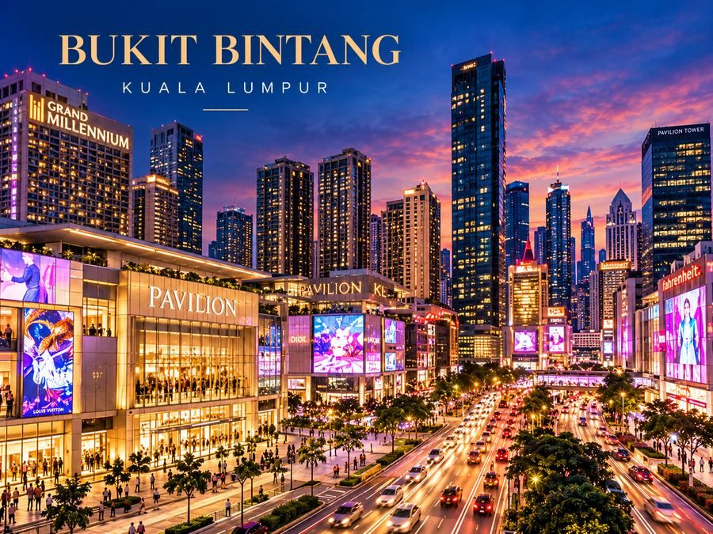
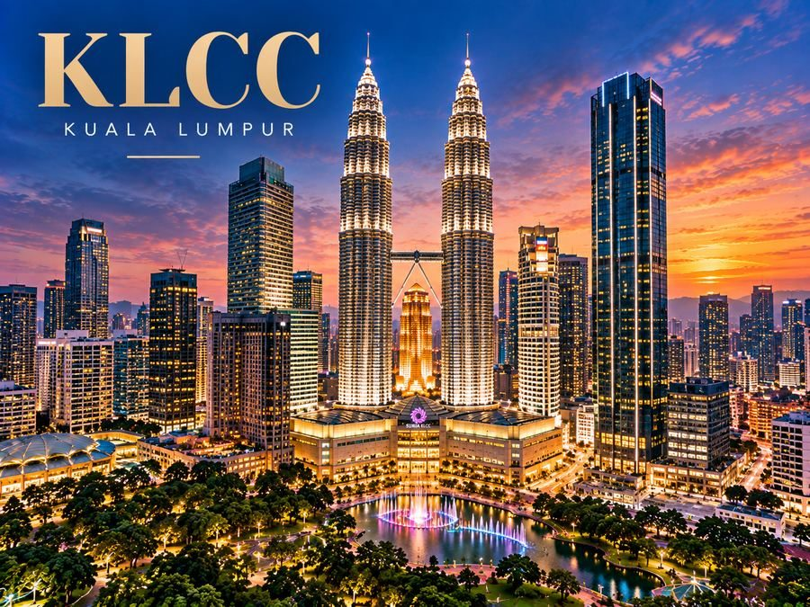
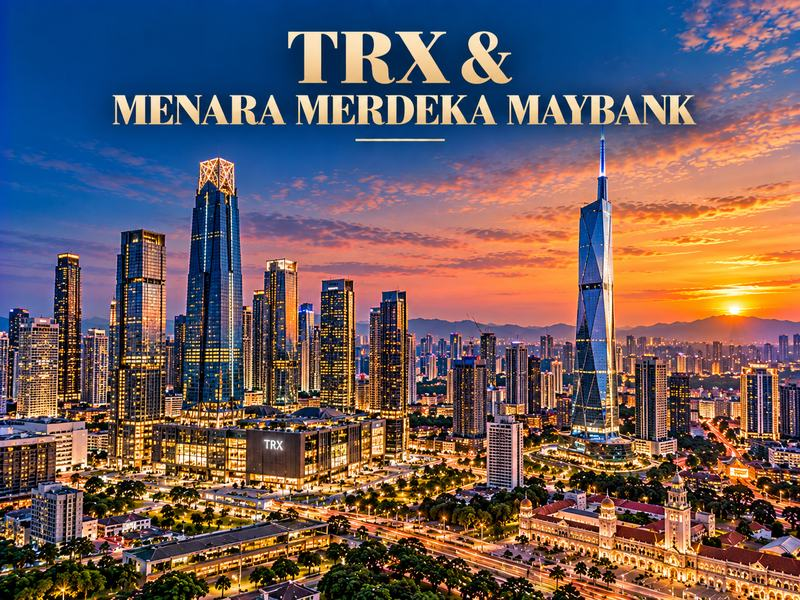
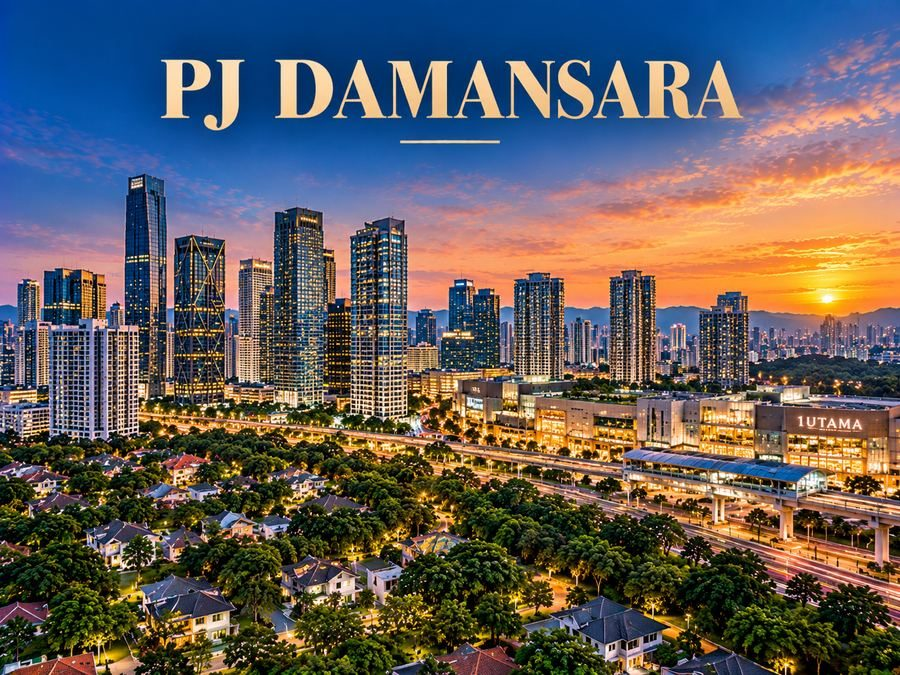
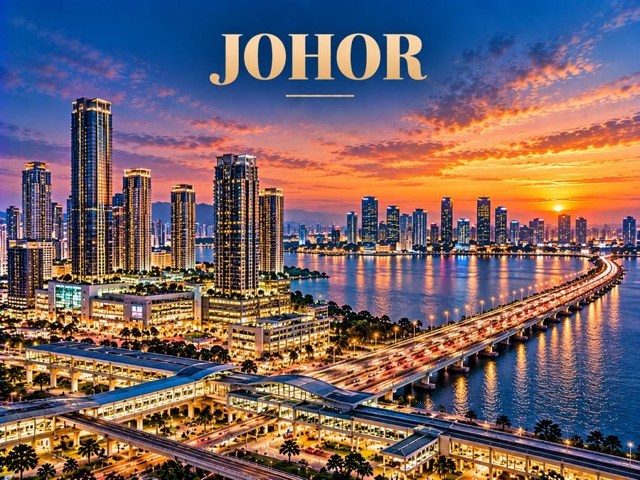
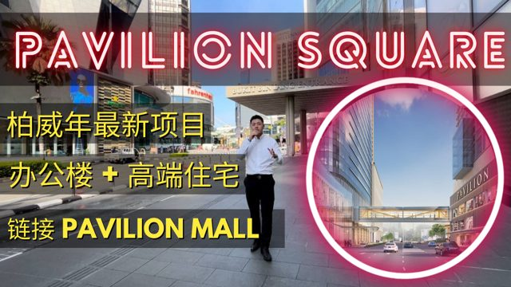
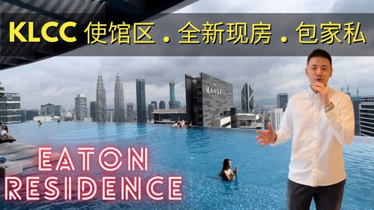
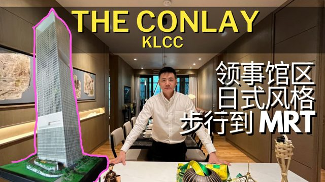
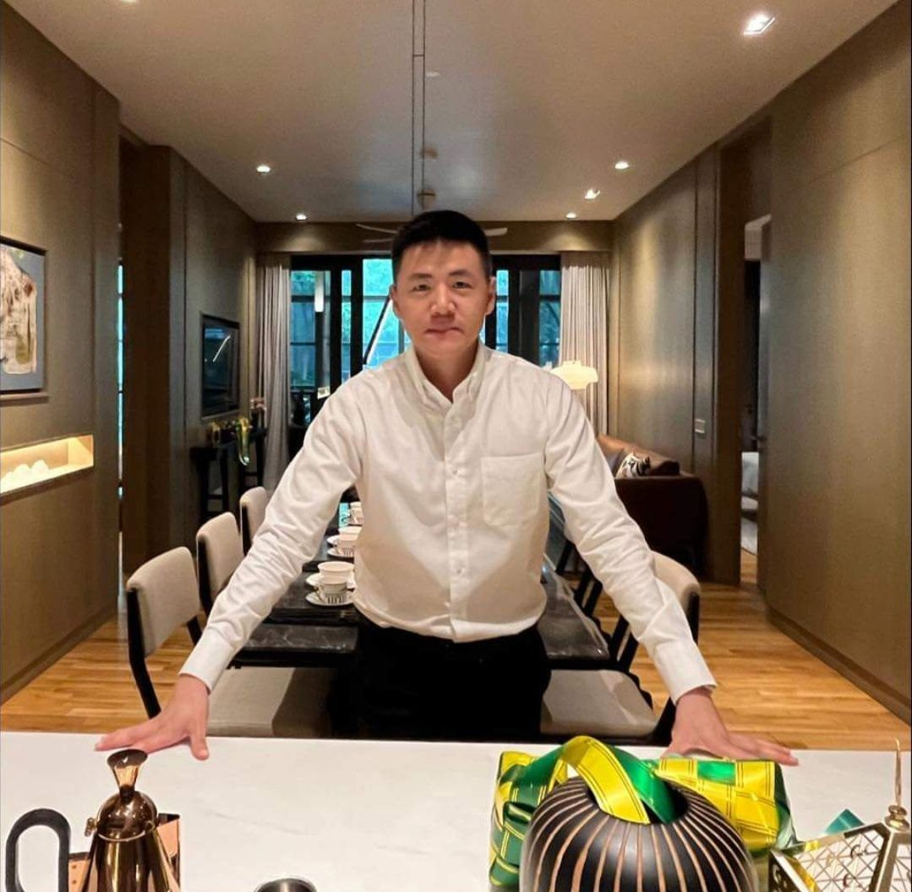

Keith Nah 鈞晖Keith Nah Real Estate
Keith Nah is a luxury property consultant helping local and international investors discover Kuala Lumpur's finest addresses.

Property Consultant & Content Strategist — Kuala Lumpur New Launches
Keith Nah helps local and international buyers navigate Kuala Lumpur's new-launch market — from KL City Centre and TRX to Bukit Bintang, Bangsar and Bukit Jalil. Through in-depth video walkthroughs and straight-talking guidance, he turns complex developer launches into clear, confident decisions.
A hand-picked shortlist of the developments Keith rates highest right now, based on location, developer track record, and long-term value.
Bukit Bintang, Kuala Lumpur
Jalan Hang Jebat, KL City Centre
ParkCity Damansara, Petaling Jaya
Jalan P. Ramlee, KL City Centre
Jalan Kemajuan, Section 13, Petaling Jaya
Bukit Jalil, Kuala Lumpur
Bukit Bintang, Kuala Lumpur
Jalan Hang Jebat, KL City Centre
ParkCity Damansara, Petaling Jaya
Browse Keith's full portfolio by area — from KL City Centre's skyline to Penang's island living and Johor's cross-border growth.

KL's retail and entertainment heart, anchored by Pavilion KL and the Bukit Bintang monorail and MRT interchange.
Explore Bukit Bintang
The city's premier financial and lifestyle address, home to the Petronas Twin Towers and Suria KLCC.
Explore KL City Centre
Kuala Lumpur's new financial and lifestyle district around the Tun Razak Exchange and Merdeka, with MRT connectivity and prime city-centre addresses.
Explore TRX & Merdeka MaybankEstablished city-fringe neighbourhoods like Seputeh and Damansara Heights, close to the CBD and popular with long-term owners.
Explore KL CityA fast-growing southern KL township anchored by Pavilion Bukit Jalil, the National Sports Complex and Bukit Jalil LRT.
Explore Bukit Jalil
Mature Petaling Jaya neighbourhoods with established amenities, strong highway access and family-friendly living.
Explore Petaling JayaIsland living that pairs heritage George Town with a growing tourism and manufacturing economy.
Explore Penang
Malaysia's southern gateway, driven by cross-border demand from Singapore and the upcoming RTS Link.
Explore JohorA UNESCO-listed heritage city on the southern coast, with growing waterfront developments and strong tourism-led demand.
Explore Melaka


Answers to what foreign buyers ask most about ownership rules, financing, and costs.
Yes. Foreigners can purchase most condominiums and landed strata properties, subject to a minimum purchase price that varies by state — currently RM1 million for most property types in Kuala Lumpur. In Selangor, the minimum purchase price for foreigners is RM2 million.
Freehold gives indefinite ownership. Leasehold is typically granted for 99 years from issuance, after which it reverts to the state unless renewed — worth considering for long-term or inheritance planning.
Yes — the Memorandum of Transfer (MOT) stamp duty is 8% for foreign buyers, compared to the lower tiered rates Malaysian citizens pay. Legal fees follow the same statutory scale for everyone.
Yes. Malaysian banks lend to non-residents, though the margin of financing is usually more conservative — typically 60% to 80% — and required income documents vary by bank and nationality.
Yes, and it's set at the state level rather than nationally. In Kuala Lumpur it's currently RM1 million for most residential property types, while in Selangor it's RM2 million.
Generally yes — both long-term leasing and short-term/Airbnb-style rentals are permitted in most developments, though it's subject to the individual building management's rules.
New developer launches actually tend to move faster than secondary market deals. If you're paying cash, signing can often be arranged shortly after purchase with a 10% down payment; financed purchases take longer since loan approval adds extra time.
No. You don't need residency, a work visa, or MM2H status to purchase — a valid passport and the funds to meet the minimum purchase price are all that's required.
Monthly maintenance and sinking fund fees (roughly RM0.30–0.50 per sq ft), quit rent, annual assessment tax, and any property management fees if you're renting it out.
MM2H is a separate long-stay visa programme, not a requirement to buy property. That said, MM2H holders often find it easier to coordinate financing and long-term relocation planning.
Still have questions specific to your situation?
Ask Keith DirectlyPractical guides on buying, financing and investing in Malaysian property — written for foreign and local buyers alike.
Infrastructure growth, rental demand and price stability keep pulling investors toward KL over other Southeast Asian capitals.
Read Article →We compare pricing trends, tenant profiles and upcoming supply across Malaysia's two most talked-about financial districts.
Read Article →Eligibility, minimum purchase thresholds and the step-by-step process international buyers should expect.
Read Article →A plain-English look at the latest MM2H visa requirements and how they connect to property purchase decisions.
Read Article →TRX commands a premium address. Here's what actually determines whether a specific launch lives up to that.
Read Article →E&O's marina-fronting island development leans on decades of hospitality brand equity. Here's what actually makes it a strong holiday-home bet.
Read Article →Deep expertise guiding international buyers through Malaysia's property landscape.
Seamless communication for clients across the region.
Every recommendation backed by market data and yield analysis.
Keith recommends what's right — even if it means not buying.
Direct connections to lawyers, bankers, designers, and property managers.
End-to-end support for MM2H and long-stay visa applications.
A vetted portfolio spanning KL City Centre, TRX, Bukit Bintang, and beyond.
Buy directly from developers at launch price with zero agent commission.
Live virtual tours and video walkthroughs for buyers abroad.
Trusted referrals for mortgages, legal due diligence, and paperwork.

Keith Nah is a Luxury Property Consultant specializing in Kuala Lumpur's most prestigious real estate — including KL City Centre, TRX, Bukit Bintang, Bangsar, and Bukit Jalil. He helps local and international buyers uncover high-potential investment opportunities and make confident decisions, from first consultation to final purchase.
Explore drone views, physical site walkthroughs, and detailed pricing breakdowns.